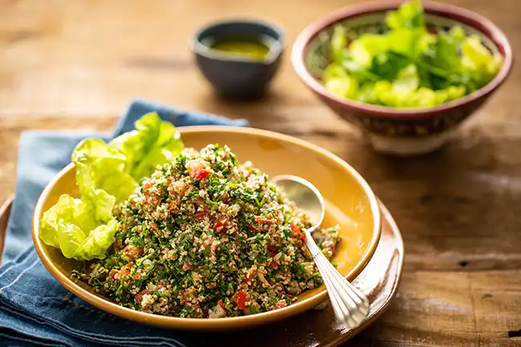

Bolo de Chocolate

Um bolo fofinho e delicioso para acompanhar o café da tarde.
⏱ Tempo de preparo: 15 min | Tempo de forno: 40 min
🍽 Porções: 8
Ingredientes
- 2 xícaras de farinha de trigo
- 1 xícara de açúcar
- 1 xícara de chocolate em pó
- 1/2 xícara de óleo
- 3 ovos
- 1 xícara de leite
- 1 colher de sopa de fermento em pó
Modo de Preparo
- Misture todos os ingredientes secos.
- Adicione os líquidos e mexa até formar uma massa homogênea.
- Coloque em forma untada e leve ao forno pré-aquecido a 180°C por 40 minutos.
💡 Dica: Para um sabor mais intenso, adicione 50g de chocolate meio amargo derretido à massa.
Panqueca de Frango

Panquecas saborosas, recheadas com frango e molho especial.
⏱ Tempo de preparo: 20 min | Cozimento: 10 min
🍽 Porções: 6
Ingredientes
- 2 xícaras de farinha de trigo
- 2 ovos
- 1 xícara de leite
- 1 pitada de sal
- 500g de frango desfiado
- Molho de tomate a gosto
Modo de Preparo
- Misture os ingredientes da massa até ficar homogêneo.
- Prepare as panquecas em frigideira antiaderente.
- Recheie com frango e molho. Enrole e sirva.
💡 Dica: Acrescente queijo ralado ao recheio antes de enrolar.
Salada Tropical

Uma salada fresca e colorida para dias quentes.
⏱ Tempo de preparo: 15 min | Pronta para servir: Imediato
🍽 Porções: 4
Ingredientes
- 1 alface americana
- 1 manga cortada em cubos
- 1 cenoura ralada
- Tomate cereja a gosto
- Molho de iogurte
Modo de Preparo
- Lave bem os vegetais.
- Misture todos os ingredientes em uma tigela grande.
- Adicione o molho e sirva gelada.
💡 Dica: Adicione castanhas ou sementes para um toque crocante.
Macarrão à Bolonhesa

Clássico macarrão com molho de carne moída e temperos aromáticos.
⏱ Tempo de preparo: 20 min | Cozimento: 15 min
🍽 Porções: 4
Ingredientes
- 300g de macarrão
- 200g de carne moída
- 1 cebola picada
- 2 dentes de alho
- Molho de tomate a gosto
- Sal, pimenta e azeite
Modo de Preparo
- Cozinhe o macarrão conforme instruções da embalagem.
- Refogue a cebola e o alho no azeite, adicione a carne e doure.
- Acrescente o molho e cozinhe por 10 minutos. Sirva sobre o macarrão.
💡 Dica: Polvilhe parmesão ralado na hora de servir.
Risoto de Cogumelos
Risoto cremoso com cogumelos frescos e parmesão ralado.
⏱ Tempo de preparo: 15 min | Cozimento: 25 min
🍽 Porções: 4
Ingredientes
- 1 xícara de arroz arbóreo
- 200g de cogumelos fatiados
- 1 cebola picada
- 2 colheres de sopa de manteiga
- 1/2 xícara de vinho branco
- Parmesão ralado a gosto
Modo de Preparo
- Refogue a cebola na manteiga, adicione os cogumelos e cozinhe.
- Adicione o arroz e o vinho, mexendo sempre.
- Vá colocando caldo aos poucos até o arroz ficar cremoso.
💡 Dica: Use cogumelos frescos variados para um sabor mais complexo.
Panetone Caseiro
Delicioso panetone com frutas cristalizadas e sabor irresistível.
⏱ Tempo de preparo: 30 min | Descanso: 2 h | Assar: 40 min
🍽 Porções: 8
Ingredientes
- 500g de farinha de trigo
- 100g de açúcar
- 200ml de leite morno
- 3 ovos
- 100g de manteiga
- Fermento biológico
- Frutas cristalizadas a gosto
Modo de Preparo
- Misture todos os ingredientes e sove bem a massa.
- Deixe crescer por 2 horas.
- Acrescente as frutas, coloque em forma e asse a 180°C por 40 minutos.
💡 Dica: Adicione raspas de laranja à massa para um aroma especial.
Mousse de Maracujá

Sobremesa leve, cremosa e com sabor tropical refrescante.
⏱ Tempo de preparo: 10 min | Geladeira: 3 h
🍽 Porções: 6
Ingredientes
- 1 lata de leite condensado
- 1 lata de creme de leite
- 1 medida da lata de suco de maracujá concentrado
- Gelatina sem sabor (opcional)
Modo de Preparo
- Bata todos os ingredientes no liquidificador até ficar cremoso.
- Despeje em taças e leve à geladeira por 3 horas.
- Decore com polpa de maracujá antes de servir.
💡 Dica: Para um toque crocante, adicione raspas de chocolate branco por cima.
Croissant de Queijo
Massa folhada crocante e recheio cremoso de queijo, perfeita para o café da manhã.
⏱ Tempo de preparo: 25 min | Forno: 20 min
🍽 Porções: 6
Ingredientes
- 1 pacote de massa folhada
- 150g de queijo mussarela
- 1 gema de ovo para pincelar
Modo de Preparo
- Corte a massa em triângulos e recheie com queijo.
- Enrole formando o croissant.
- Pincele com gema e asse a 180°C por 20 minutos.
💡 Dica: Sirva quente com café fresco.
Tabule Libanês
Salada refrescante com trigo para quibe, tomate, pepino e hortelã.
⏱ Tempo de preparo: 20 min
🍽 Porções: 4
Ingredientes
- 1 xícara de trigo para quibe
- 2 tomates picados
- 1 pepino picado
- 1/2 maço de hortelã
- 1 limão espremido
- Azeite, sal e pimenta a gosto
Modo de Preparo
- Hidrate o trigo em água por 15 minutos e escorra.
- Misture todos os ingredientes em uma tigela.
- Tempere com limão, azeite e sal.
💡 Dica: Sirva gelado como acompanhamento ou prato principal leve.
Omelete de Legumes

Rápido, saudável e cheio de sabor para o café da manhã ou jantar leve.
⏱ Tempo de preparo: 10 min | Cozimento: 5 min
🍽 Porções: 2
Ingredientes
- 2 ovos
- 1/4 xícara de cenoura ralada
- 1/4 xícara de tomate picado
- Sal, pimenta e azeite a gosto
Modo de Preparo
- Bata os ovos e adicione os legumes.
- Tempere e despeje em frigideira antiaderente.
- Cozinhe até firmar e vire para dourar.
💡 Dica: Acrescente queijo ralado para um toque especial.
Lasanha de Berinjela

Alternativa leve e deliciosa à lasanha tradicional, sem massa.
⏱ Tempo de preparo: 30 min | Forno: 25 min
🍽 Porções: 4
Ingredientes
- 2 berinjelas fatiadas
- 2 xícaras de molho de tomate
- 200g de queijo muçarela vegano
- Azeite, sal e orégano
Modo de Preparo
- Grelhe as fatias de berinjela.
- Monte camadas de berinjela, molho e queijo.
- Leve ao forno por 25 minutos.
💡 Dica: Finalize com manjericão fresco.
Cookies de Aveia e Mel

Biscoitos crocantes por fora e macios por dentro, perfeitos para o lanche.
⏱ Tempo de preparo: 15 min | Forno: 20 min
🍽 Porções: 12
Ingredientes
- 1 xícara de aveia em flocos
- 1/2 xícara de farinha de trigo
- 1/3 xícara de mel
- 1/4 xícara de manteiga
- 1 ovo
Modo de Preparo
- Misture todos os ingredientes até formar uma massa.
- Faça bolinhas e asse a 180°C por 20 minutos.
💡 Dica: Acrescente gotas de chocolate para uma versão ainda mais gostosa.
Sopa Cremosa de Abóbora

Sopa leve, nutritiva e reconfortante para dias frios.
⏱ Tempo de preparo: 20 min | Cozimento: 15 min
🍽 Porções: 3
Ingredientes
- 500g de abóbora cabotiá
- 1 cebola picada
- 1 dente de alho
- Sal e azeite a gosto
Modo de Preparo
- Refogue a cebola e o alho, adicione a abóbora e água.
- Cozinhe até amolecer e bata no liquidificador.
- Volte à panela, ajuste o sal e aqueça antes de servir.
💡 Dica: Sirva com sementes torradas de abóbora.
Iogurte Natural com Frutas

Uma opção leve e colorida para o café da manhã ou lanche.
⏱ Tempo de preparo: 5 min
🍽 Porções: 2
Ingredientes
- 1 pote de iogurte natural
- 1 banana fatiada
- 5 morangos picados
- 1 colher de mel
- Granola a gosto
Modo de Preparo
- Em um copo, intercale camadas de iogurte, frutas e granola.
- Finalize com mel e sirva gelado.
💡 Dica: Varie as frutas conforme a estação.
Mini Pizzas Caseiras

Deliciosas e práticas, perfeitas para festas e lanches rápidos.
⏱ Tempo de preparo: 20 min | Forno: 15 min
🍽 Porções: 8 mini pizzas
Ingredientes
- 1 massa para pizza
- Molho de tomate
- Queijo, presunto e orégano
Modo de Preparo
- Corte a massa em discos pequenos.
- Adicione o molho e o recheio de sua preferência.
- Asse a 200°C por 15 minutos.
💡 Dica: Faça versões vegetarianas com legumes grelhados.
Pudim de Banana

Sobremesa cremosa e natural, com sabor marcante de banana.
⏱ Tempo de preparo: 10 min | Geladeira: 2h
🍽 Porções: 6
Ingredientes
- 3 bananas maduras
- 1 lata de leite condensado
- 2 ovos
- 1 colher de sopa de açúcar para caramelizar
Modo de Preparo
- Bata as bananas, ovos e leite condensado no liquidificador.
- Caramelize uma forma e despeje a mistura.
- Asse em banho-maria por 40 minutos e leve à geladeira.
💡 Dica: Sirva com canela polvilhada.
Smoothie Tropical

Bebida refrescante e nutritiva com frutas tropicais e iogurte.
⏱ Tempo de preparo: 5 min
🍽 Porções: 2
Ingredientes
- 1 xícara de abacaxi picado
- 1/2 manga
- 1 copo de iogurte natural
- Gelo e mel a gosto
Modo de Preparo
- Bata tudo no liquidificador até ficar cremoso.
- Sirva imediatamente.
💡 Dica: Acrescente hortelã para um toque refrescante.